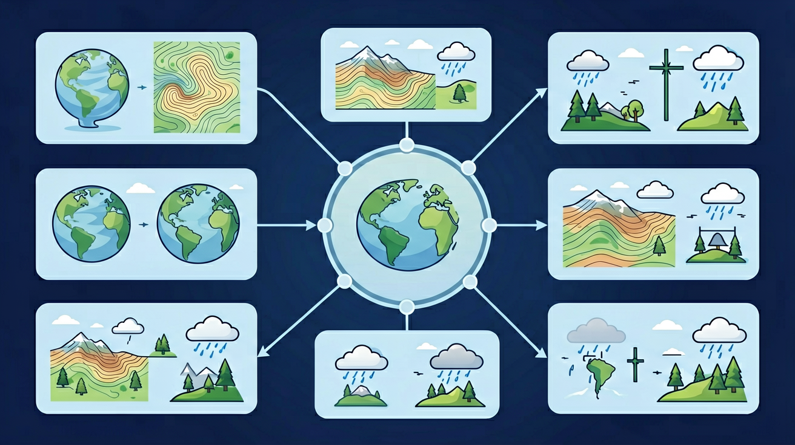

一张平平的地图，怎么看出哪里是山、哪里是谷、哪里是悬崖？

❓ 等高线密密麻麻的地方，是不是特别难爬？
❓ 为什么地图上有些等高线是弯的？
❓ 怎么从等高线看出哪里是山顶哪里是盆地？
学完这一课，这些问题你都能自信地回答。
爬山时有陡有缓：有的坡一口气冲上去，有的坡要绕着走"之"字。地图是平面的，但地表有高有低。
一座立体的山，怎么画成一张平面地图？哪里陡、哪里缓，从纸面上怎么看出来？
用等高线把山"切"在纸上：同一海拔的点连成线，线的疏密告诉你坡度，线的弯曲告诉你山脊山谷——学会它，你就能像向导一样读懂任何一张地形图。
不用想太多，凭感觉选——看看你的直觉准不准。
在理解等高线之前，先分清两个高度概念。海拔（绝对高度）是地面某点高出海平面的垂直距离，中国以青岛验潮站测得的黄海平均海平面为基准，珠穆朗玛峰海拔 8848.86 米，吐鲁番盆地艾丁湖海拔 -154.31 米。相对高度则是某点高出另一点的垂直距离，比如珠峰比山脚大本营高出约 4000 米。等高线地形图上的数字，统一都是海拔。
为什么用海拔而不用相对高度？因为地图需要一个全国统一的"零起点"。如果每座山都从自己的山脚算起，两张地图就无法比较。海平面是天然基准，所以全球地形图都以海拔为准。
等高距是相邻两条等高线之间的海拔差。同一幅地图上等高距固定不变：山区常用 20 米、50 米或 100 米，平原地区可能只用 5 米或 10 米。等高距的选择取决于地形起伏——起伏越大，等高距越大，否则线条会密得看不清。
通过数等高线可以估算高度：若某点与基准线之间有 4 条间隔 50 米的等高线，则该点海拔约 200 米。如果两条等高线之间还有一条虚线（间曲线），表示半距，即 25 米。
想象一座山，你拿一把巨大的刀水平着从山脚往上切——
🔑 关键：同一条等高线上海拔相同；相邻等高线高差（等高距）固定。等高线是连接地图上海拔高度相同的点的闭合曲线，就像水平切开一个圆锥形蛋糕，每一层的边缘就是该蛋糕的"等高线"。
先预测：如果把切面从山脚慢慢抬升到山顶，右侧俯视图里的圆圈会怎样变化？
操作：拖动滑块（或直接点击山体），观察红色切面与山的交线如何变化——右侧俯视图高亮显示当前切出的那条等高线。
① 同线等高：同一条等高线上所有点的海拔完全相同。这是等高线的定义，也是判读一切地形图的基础。
② 同图等距：同一幅地图内，相邻等高线的海拔差（等高距）处处相等。不能这张图东部用 50 米、西部用 100 米。
③ 闭合曲线：等高线一定是闭合的，无论圈多大。有时图幅太小，圈被裁断了，但想象中山的那一边它一定闭合。
④ 不相交（除陡崖）：两条不同海拔的等高线永远不会相交。唯一例外是陡崖——那里坡度接近 90°，多条等高线重合在一起，用锯齿状符号表示。
示坡线：在山顶或盆地的闭合等高线上，有时会看到一两条与等高线垂直的小短线，指向海拔降低的方向——这就是示坡线。山顶的示坡线画在圈外侧（向外指），盆地的示坡线画在圈内侧（向里指）。有了它，不看数字也能一眼区分"这是山包还是洼地"。
间曲线与助曲线：当局部地形起伏太小，按等高距画的线太疏时，制图师会在两条等高线之间加画虚线：加在二分之一高度处的叫间曲线（如 50 米等高距中画 25 米线），加在四分之一处的叫助曲线。它们用长虚线或短虚线表示，读图时别忘了把它们折算成半距、四分之一距。
首曲线与计曲线：按等高距画的基本等高线叫首曲线（细实线）；为了读数方便，每隔 4 条（即 5 倍等高距）加粗一条，叫计曲线，线上常标注海拔数字。读图时先找计曲线上的数字，再数首曲线，就能快速定位任何一点的高度。
根据等高线图绘制AB线剖面图
下面这幅图不是示意图——它由真实高程数据生成，0~5500 米共 13 级等高线。找一找：青藏高原上密集成团的闭合圈、四川盆地那圈"项链"、东部平原大片空白——这不就是模块 3 学的判读规则吗？点击标注点，右侧会放大显示该类地形的典型等高线形态与判读要点。
左：全国等高线图（真实高程数据生成，绿→褐→灰白 = 低→高）· 右：所选地形的等高线形态放大示意
等高线挤在一起，高度在很短水平距离内变化很大——登山时遇到的陡壁区域。
等高线间隔大，高度变化需要更长水平距离——适合骑行的平缓坡地。
💡 密陡疏缓：比较单位距离内等高线数量，就能判断 AB 两地坡度差异。
相邻两条等高线之间的垂直距离叫等高距。同一幅地图上等高距固定：山区常用 20-100 米，平原可能只用 5 米。通过数等高线数量可以估算高度：若某点与基准线之间有 4 条间隔 50 米的等高线，则该点海拔约 200 米。
先预测：如果把等高线间距调得很小，右侧的山坡会变成什么样？
操作：拖动滑块改变等高线间距，观察左侧等高线疏密与右侧山坡坡度的对应关系。
登山路线选择：资深登山者看等高线地图，会优先选择等高线稀疏的坡面——坡度缓，省力且安全。如果必须经过密集区，会寻找"之"字形小路或山脊线（山脊通常比山谷两侧坡度缓）。
公路选线：山区公路尽量沿等高线修建，减少爬坡和下坡。两条等高线之间的"走廊"是最佳选线区域。如果必须穿越等高线密集区，就需要打隧道或修盘山公路。
水坝选址：水坝要建在"口袋形"洼地的出口处——上游等高线形成宽阔盆地（蓄水量大），出口处等高线密集（峡谷窄，坝体短，造价低）。三峡大坝选址正是利用了这一原理。
通过等高线形状可以判断五种基本地形：山顶呈闭合小圈（如富士山）；山脊是凸向低处的曲线（像鱼背骨）；山谷是凸向高处的曲线（如峡谷）；鞍部像马鞍状的两山之间低处；陡崖处等高线几乎重合（如华山悬崖）。
闭合，内高外低
向低处凸出
向高处凸出
多条重叠
两组闭合之间
💡 口诀：凸低为脊，凸高为谷。台湾玉山主峰在地图上表现为层层嵌套的闭合圆圈，而太鲁阁峡谷表现为向高处凸起的曲线群。
先预测：你觉得"凸低为脊"是什么意思？等高线向低处凸出，中间高还是两侧高？
操作：点击图上的圆点，识别五个地形部位；也可以用下方按钮切换高亮。
山峰（山顶）：等高线闭合，数值由四周向中间增大。最内圈就是山顶。如果闭合圈内数值反而降低，那是盆地或洼地，不是山峰。
山脊：等高线向低处凸出。山脊线是分水线，登山时沿山脊走视野好、坡度相对缓，但风大。
山谷：等高线向高处凸出。山谷线是集水线，可能发育河流。徒步时山谷常有水源，但雨天要警惕山洪。
鞍部：两个山峰之间的低洼部位，形如马鞍。鞍部是翻越山脊的最近通道，也是登山者常选的营地位置（避风）。
陡崖：多条等高线重合在一起，坡度接近 90°。地图上常用锯齿状符号表示，攀岩和蹦极常选陡崖。
盆地：等高线闭合，数值由四周向中间减小。盆地底部平坦，常是农业和聚落集中区，如四川盆地。
等高线向高处凸出的地方是什么地形？
等高线图是俯视图。沿某条线切开看"侧面"轮廓，就是地形剖面图。绘制步骤：
🌍 例如要修建穿山隧道时，工程师就会先制作山体剖面图来分析最佳施工路线。剖面图能直观显示坡度变化和视野盲区。
先预测：如果把剖面线从两座山之间穿过，剖面图会呈现什么形状？
操作：红色虚线是剖面线，拖动 A/B 两个端点，下方实时生成对应的地形剖面图。
通视问题是剖面图最重要的应用。判断方法：在剖面图上连接观察点和目标点，如果连线始终高于地形剖面线，则通视；如果连线被剖面线挡住，则不通视。
实际案例：森林防火瞭望塔选址，必须保证塔与责任区内的每一点都通视。通信基站选址同理——如果基站与某村庄之间有山脊阻挡，信号就无法覆盖。军事上，阵地选择也讲究"通视良好、隐蔽性强"的矛盾统一。
技巧：等高线图上，如果两点之间隔着山脊（等高线向低处凸出），通常不通视；如果隔着山谷（等高线向高处凸出），通常通视。但最准确的判断还是画剖面图。
中考常考"沿 AB 线绘制地形剖面图"，标准解法分四步，一步都不能省：
💡 检验技巧：画完后对照原图——剖面图上的峰应对应闭合等高线，谷应对应"V"形弯曲，如果峰谷位置与原图相反，八成是把切割线方向看反了。
把等高线想象成蛋糕的层层切片，每层高度差相同
等高线是海拔相同的点连成的闭合曲线，线上数字表示海拔
疏如头发丝代表缓坡，密如梳子齿代表陡坡
等高线向高处凸是山谷（水流处），向低处凸是山脊（分水岭）
用等高线原理理解商场扶梯坡度设计
先独立作答，再点选项查看对错与错因。
图中黑色虚线最可能表示
最可能发生滑坡的区域是
判断方向的最佳依据是
西侧540米区域等高线稀疏，说明该处地形为____
答案：缓坡
等高线越稀疏坡度越平缓
若两条相邻等高线海拔分别为300米和350米，则该图等高距为____米
答案：50
相邻等高线高差固定
2 道题检验学习效果，答完生成结课报告。
多条等高线在某处完全重叠，这是什么地形？
等高线向高处凸出的地方是什么地形？
错！等高线密集只说明坡度陡，不说明海拔高。深谷两侧的等高线同样密集。判读时必须先看等高线上标注的海拔数值，再看疏密。60% 的同学会在这里栽跟头。
记忆法：想象你站在山脊上，脚下是高的，两边是低的——等高线向低处"滑"下去，所以"凸低为脊"。站在山谷里，脚下是低的，两边是高的——等高线向高处"爬"上去，所以"凸高为谷"。
不完全对。等高线原则上不相交，但陡崖处多条等高线重合在一起，这是唯一例外。重合不等于相交——重合是多条线叠在一起，相交是两条线交叉穿过。陡崖用锯齿符号表示，看到锯齿就知道是悬崖。
✅ 等高线永不相交（悬崖用特殊符号表示）
💡 混淆陡崖符号与普通等高线
✅ 用'凸低为脊，凸高为谷'口诀辅助记忆
💡 未理解等高线弯曲方向与地形关系
等高线密集 ≠ 一定是高山——也可能是深谷！判读时先看等高线上标注的海拔数值，再看疏密和弯曲方向。60% 的同学会在这里栽跟头：密集只说明坡度陡，不说明海拔高。
打开任意一款带地形图层的地图 App，找到你家附近的一处山地或公园，截下等高线图，回答三个问题：①这幅图的等高距是多少？②最平缓的登山路线在哪一侧？③如果把主峰和次峰连成一条线画剖面图，中间会经过鞍部吗？下节课带着你的答案来分享。
口诀：凸高为谷，凸低为脊；密陡疏缓，闭高为峰
类比：等高线就像洋葱的层次，层数越多海拔越高
在等高线地形图的基础上，按不同海拔高度涂上不同颜色，就是分层设色地形图。国际通用配色：绿色表示平原（0–200 米），黄色表示高原（200–500 米），褐色表示山地（500 米以上），蓝色表示海洋，白色表示冰雪。
中国地形图上，西部是深褐色（青藏高原，平均 4000 米以上），中部是黄色（黄土高原、云贵高原，1000–2000 米），东部是绿色（平原丘陵，500 米以下）。一眼就能看出"西高东低、三级阶梯"的格局。
把"海拔"换成"水深"，把"山"换成"海沟"，就得到等深线——连接海洋中水深相同各点的曲线。等深线地形图用于航海、渔业、海底工程。等深线越密，海底坡度越陡；等深线数值越大，水越深。
大陆架是等深线稀疏的浅海区（水深 200 米以内），大陆坡是等深线密集的陡坡区，海沟是等深线闭合且数值极大的深海区。马里亚纳海沟最深处 11034 米，等深线密集到几乎重合。
户外运动 App：两步路、奥维互动地图等徒步软件都提供等高线图层。出发前看一眼路线穿越的等高线疏密，就能预估今天要走多少爬坡——穿越 10 条间距 20 米的等高线，意味着累计爬升约 200 米。很多徒步路线标注的"累计爬升"就是这样算出来的。
城市规划与防洪：城市内涝点往往出现在等高线闭合的洼地。规划师用等高线（或数字高程模型 DEM）模拟暴雨后水流汇集路径，提前布置排水泵站。2021 年郑州"7·20"特大暴雨后，地形分析成为城市韧性评估的标配工具。
滑雪与滑翔伞：滑雪场雪道图就是一张分层设色地形图——绿道在缓坡（等高线疏），黑道在陡坡（等高线密）。滑翔伞起飞场要求迎风坡等高线均匀稀疏，保证平稳升空。
考试链接：中考常把等高线与实际情境结合——给你一幅某村等高线图，问"哪里适合修水库""哪条路线登山最省力""甲村乙村谁先被洪水淹"。掌握了疏密与弯曲的判读，这些题都是送分题。